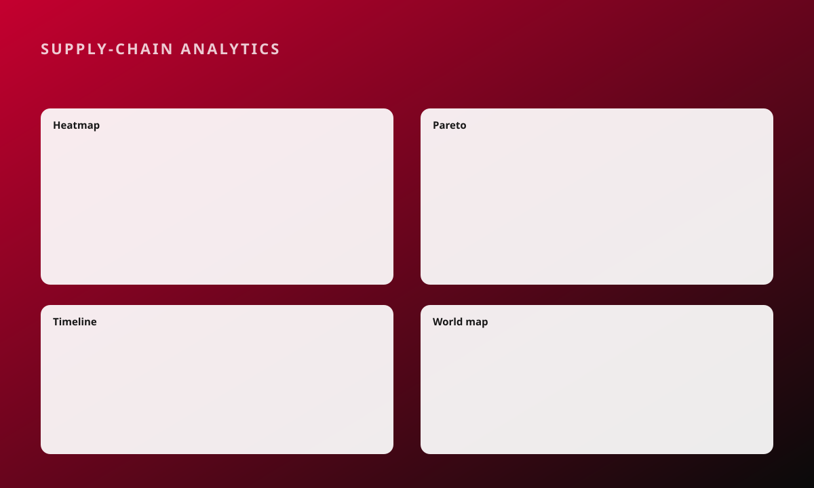

Enterprise SaaS · Data visualisation and design system
Global pharmaceutical supply-chain SaaS
Sole designer-developer on a global supply-chain dashboard used across three regions.
The problem
A global supply-chain SaaS product reviewed by stakeholders in the US, India and EMEA needed analysis views that were consistent, accessible and settings-driven rather than rebuilt for each market.
My role and boundaries
- Sole designer-developer: designed the product and built it in Angular, RxJS and NgRx.
- Delivered a Highcharts suite of five views (heatmap, world map, timeline, Pareto and mind map), all driven by settings with no hard-coded values.
- Registered components in Storybook for the shared Common Component Library and kept WCAG 2.2 AA across the surface.
- Ran UAT and defect triage with stakeholders across three time zones.
Three decisions and what I traded away
Settings-driven charts, not hard-coded views
Every chart reads its configuration, so a new market or metric is a settings change rather than a new component.
Register everything in the shared library
Components are registered in Storybook for the shared Common Component Library.
Process
Stakeholder review
Chart suite design
Build and Storybook
UAT and triage
Outcome
5Highcharts views, all settings-driven
3regions reviewing the product